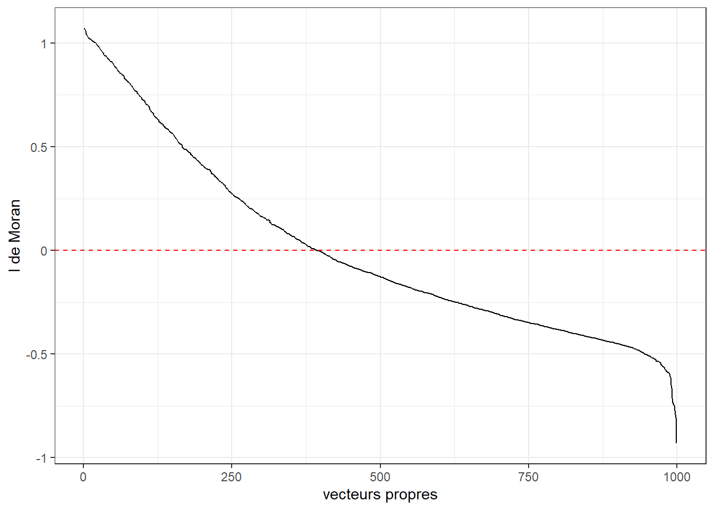
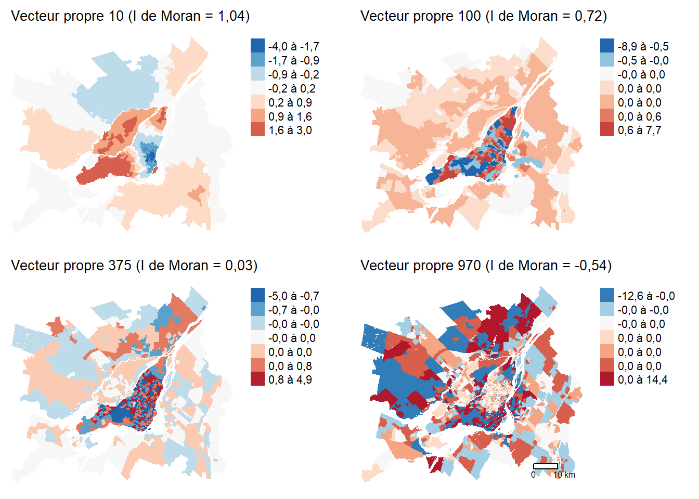
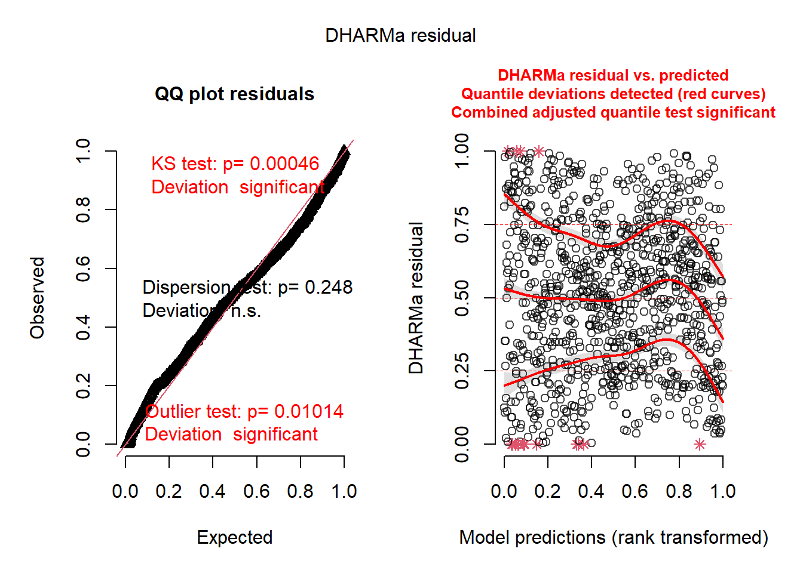
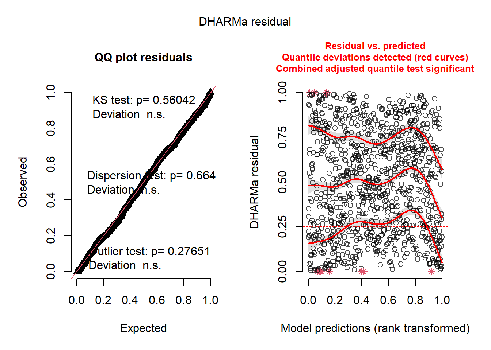
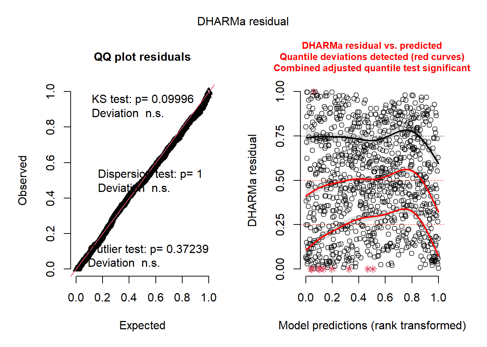
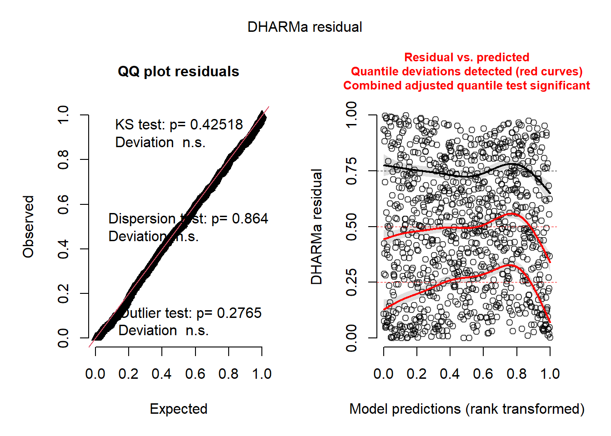
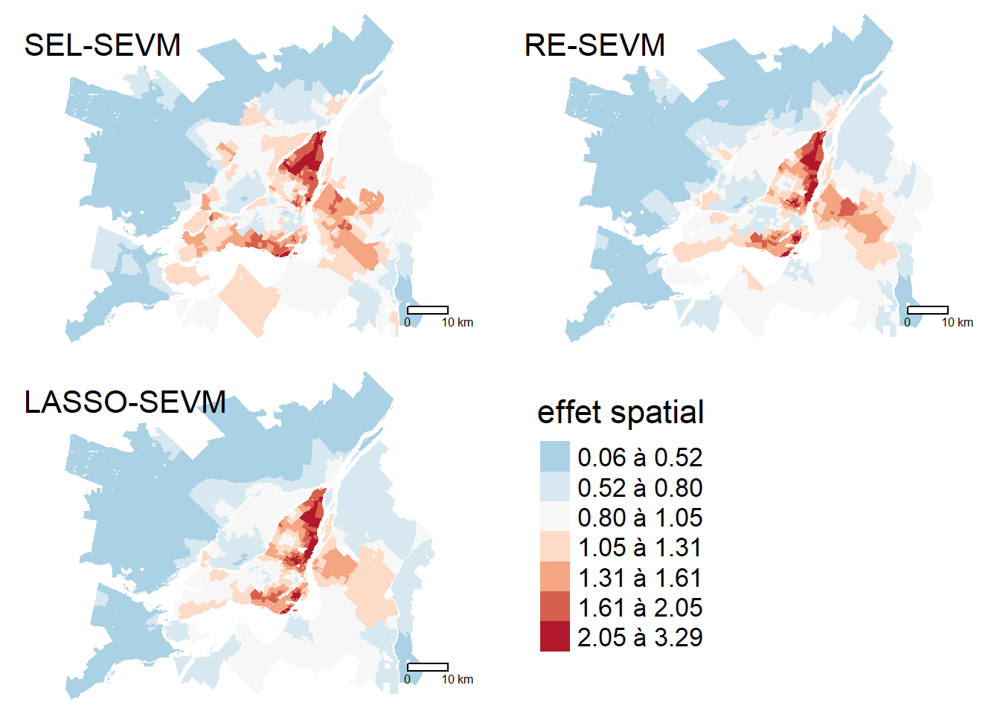

7 Filtrage spatial
Une autre technique utilisée pour ajouter l’espace dans un modèle a été proposée par Daniel Griffith (2019) et est connue sous le nom du filtrage spatial (spatial filtering). Cette technique est très flexible, car elle s’applique à n’importe quel type de modèle GLM, GLMM et GAM. L’approche est relativement simple : elle consiste à ajouter dans le modèle un ensemble de variables supplémentaires dont le rôle est de capturer des tendances spatiales qui autrement seraient présentes dans les résidus. Ces variables supplémentaires sont appelées des vecteurs propres spatiaux (spatial eigenvectors en anglais, SEV) et sont obtenurs à partir de la matrice de pondération spatiale décrivant l’espace de nos données. Plus exactement, les SEV sont obtenus en décomposant la matrice spatiale de la même manière que nous décomposons la variance d’un jeu de données lorsque nous réalisons une analyse en composantes principales (ACP). Pour un rappel sur l’ACP, vous pouvez vous référez au chapitre sur les analyses factorielles (Apparicio et Gelb 2022). Ces vecteurs propres sont aussi appelés Moran eigenvectors (MEM).
Objectifs d’apprentissage visés dans ce chapitre
À la fin de ce chapitre, vous devriez être en mesure de :
- Préparer des vecteurs propres de Moran à partir d’une matrice de pondération spatiale.
- Utiliser ces vecteurs propres pour appliquer la méthode du filtrage spatial.
- Analyser les résultats produits par un modèle de type SEVM (Spatial Eigenvector Model).
Liste des packages utilisés dans ce chapitre
- Pour calculer des vecteurs propres de Moran :
-
adespatialdédié l’analyse spatiale multidimensionnelle.
-
- Pour ajuster des modèles SEVM :
-
spmoranetspatialregdédiés aux régressions spatiales. -
mgcvetgamlsspour modéliser des GLM avec une grande flexibilité.
-
- Pour analyser les résidus des modèles :
`DHARMa` pour valider la distribution de modèle GLM complexes.`spdep` pour calculer le *I* de Moran et créer des matrices de pondération spatiale.
- Pour construire des cartes et des graphiques :
-
tmapest certainement le meilleur package pour la cartographie. -
ggplot2pour construire des graphiques.
-
7.1 Les vecteurs propres de Moran
À partir d’une matrice spatiale W de taille n x n, il est possible de calculer n-1 vecteurs propres de Moran qui représentent chacun un agencement spatial possible. Ces vecteurs propres sont obtenus en décomposant la variance de la matrice spatiale de façon analogue à une analyse en composante principale (ACP).
Analyse en composantes principales (ACP)
Pour un rappel sur l’ACP, nous vous invitons à lire la section suivante du livre Méthodes quantitatives en sciences sociales : un grand bol d’R (Apparicio et Gelb 2022).
Brièvement, une ACP est une méthode de réduction des données qui permet de résumer la variance d’un jeu de données ayant k colonnes avec un ensemble de l vecteurs propres avec \(k > l\). Les vecteurs propres sont des nouvelles variables obtenues avec une combinaison linéaire des colonnes originales k. Le premier vecteur propre correspond à la tendance principale du jeu de données, formées par les plus importantes corrélations entre les variables originales. Ces vecteurs propres sont orthogonaux, ce qui signifie qu’ils ne sont pas corrélés entre eux.
Appliquer l’ACP à une matrice spatiale revient à extraire des variables capables de résumer l’organisation spatiale présente dans la matrice de pondération spatiale W. Le premier vecteur propre issu de l’ACP appliquée à W représente alors l’agencement spatial avec la plus forte autocorrélation spatiale positive possible. À l’inverse, le dernier vecteur propre représente l’agencement spatial avec la plus forte autocorrélation spatiale négative possible. Comme pour l’ACP, ces vecteurs propres spatiaux sont non corrélés entre eux. Ils sont aussi appelés les vecteurs propres de Moran du fait du lien entre leur formulation et celle de l’indicateur du I de Moran.
Prenons un exemple concret avec les données de secteurs de recensement de Montréal ci-dessous.
La figure 7.1 permet de visualiser la valeur du I de Moran associée avec chacun des vecteurs propres. On constate ainsi que le premier vecteur propre à une valeur de I de Moran proche de 1 et que l’autocorrélation spatiale reste positive jusqu’au vecteur 375 environ. Au-dela de ce seuil, l’autocorrélation spatiale des vecteurs devient négative.
Nous pouvons visualiser la géographie propre de chacun de ces vecteurs. À la figure 7.2, nous illustrons quatre de ces vecteurs présentant respectivement une autocorrélation spatiale positive, une distribution spatiale aléatoire et finalement une autocorrélation spatiale négative.

Rappelons ici que ces vecteurs sont obtenus pas décomposition de la matrice de pondération spatiale. Il ne s’agit pas de données qui ont été collectées sur le territoire d’étude. Ils représentent des géographies possibles qui peuvent émerger de notre matrice de pondérations spatiales \(W\).
7.2 Filtrage spatial
Dans un modèle utilisant l’approche de spatial filtering, l’idée est d’ajouter dans l’équation une sélection de vecteurs spatiaux permettant de réduire l’autocorrélation spatiale dans les résidus. Pour chaque vecteur spatial ajouté au modèle, un coefficient est ajusté. La somme des vecteurs spatiaux multipliés par leur coefficient respectif est donc un terme dans le modèle tentant de capturer des tendances spatiales plus ou moins complexes qui autrement auraient fait partie des résidus.
\[ \begin{aligned} &y \sim D(\mu,\theta)\\ &g(\mu) = \beta_0 + \beta X + \zeta\\ &\zeta = \alpha Z \end{aligned} \tag{7.1}\]
avec :
- \(y\), la variable dépendante.
- \(D\), une distribution avec une espérance \(\mu\) et ses autres paramètres \(\theta\).
- \(\beta_0\), la constante.
- \(X\), les variables indépendantes dont l’effet est supposé linéaire.
- \(\beta\), les coefficients des variables indépendantes.
- \(\zeta\), le terme spatial utilisé pour le filtrage spatial.
- \(\alpha\), les coefficients des vecteurs propres spatiaux.
- \(Z\), les vecteurs propres spatiaux ajoutés au modèle.
Filtrage spatial et GAM
Il existe une forte similarité dans la formulation d’un modèle GAM et d’un modèle utilisant du filtrage spatial. Pour rappel, un modèle GAM introduit l’espace avec une spline. Or, Une spline est une combinaison d’un ensemble de fonctions de base (obtenues sur les coordonnées spatiales ou la matrice de contiguïté) multipliées par des coefficients. Dans un modèle avec filtrage spatial, la logique est similaire, mais les fonctions de base sont cette fois-ci les vecteurs propres spatiaux.
L’enjeu principal avec la méthode du filtrage spatial est de sélectionner adéquatement les vecteurs propres à intégrer dans le modèle. En effet, il n’est pas possible de tous les sélectionner, car nous aurions alors plus de coefficients à estimer que d’observations dans les données. Le choix des vecteurs propres doit valider les critères suivants :
Réduire l’autocorrélation spatiale des résidus (correction de la dépendance spatiale).
Améliorer l’ajustement du modèle (contribution à la prédiction).
Ne pas complexifier indûment le modèle (principe de parcimonie).
Il existe actuellement trois approches permettant de sélectionner les vecteurs propres spatiaux à intégrer dans un modèle. Ces trois approches partent de postulats différents et ont chacune leurs avantages et inconvénients.
7.2.1 Sélection itérative
La première approche proposée (Griffith 2003) consiste à appliquer une procédure itérative de sélection des vecteurs propres spatiaux, à la manière d’une régression pas à pas (stepwise regression). Elle ajoute un vecteur propre spatial au modèle s’il vérifie les trois critères suivants :
Il permet d’augmenter le R2 du modèle.
Il permet de réduire l’autocorrélation spatiale des résidus.
Il existe une corrélation significative entre le vecteur propre et la variable dépendante.
Puisque les vecteurs propres sont non corrélés, leur ordre d’ajout dans le modèle n’a pas d’importance. Il est donc conseillé d’ordonner les vecteurs propres en fonction de leur corrélation avec la variable dépendante pour effectuer leur sélection.
Il est assez simple d’étendre cette approche à des GLM ou même des GLMM. Pour ces modèles, l’objectif ne sera pas de maximiser le R2, mais plutôt d’obtenir une réduction significative de la déviance (likelihood ratio test). Notons que pour ce type de modèle, il est important de vérifier l’autocorrélation spatiale des résidus standardisés ou simulés, car de nombreux GLM assument une hétéroscédasticité des résidus. Pour un rappel sur le likelihood ratio test, vous pouvez vous référer à cette section du livre Méthodes quantitatives en sciences sociales : un grand bol d’R (Apparicio et Gelb 2022).
L’approche par sélection itérative est très intuitive et relativement facile à mettre en œuvre. Cependant, elle comporte plusieurs défauts. Lorsque le jeu de donnée est grand, elle devient extrêmement coûteuse en temps de calcul, car le modèle doit être ajusté un grand nombre de fois. Aussi, bien l’ordre d’ajout des vecteurs propres n’est pas important, leur ajout séquentiel peut poser un problème. En effet, des combinaisons de vecteurs propres peuvent être particulièrement efficaces pour effectuer le filtrage spatial, ce qui n’est pas permis par la procédure pas à pas (stepwise). Notons ici que des approches alternatives utilisant par exemple des algorithmes génétiques ont été proposées (Helbich et Griffith 2016), bien qu’elles ne soient pas communément utilisées.
7.2.2 Effet aléatoire
Murakami et Griffith (2015) ont proposé une approche par effets aléatoires pour effectuer le filtrage spatial. Dans cette approche, les coefficients des vecteurs propres ne sont pas estimés comme des effets fixes (simples coefficients), mais comme des effets aléatoires provenant d’une distribution normale. La formulation du modèle devient alors :
\[ \begin{aligned} &y \sim D(\mu,\theta)\\ &g(\mu) = \beta_0 + \beta X + \alpha Z\\ &\alpha \sim N(0,\sigma) \end{aligned} \tag{7.2}\]
avec :
- \(\sigma\), un terme de variance estimé par le modèle contrôlant la variation des coefficients des vecteurs propres spatiaux \(\alpha\) à s’écarter de 0.
L’estimation des coefficients comme des effets aléatoires entraîne une pénalisation de leur estimation. Ainsi, le modèle devient capable de retirer de lui-même les vecteurs propres non pertinents. Habituellement, les vecteurs propres inclus dans ce modèle sont les vecteurs propres ayant une autocorrélation spatiale positive, car dans la vaste majorité des cas, les résidus sont positivement spatialement autocorrélés.
Fait intéressant, cette approche pénalisée par effets aléatoires revient à imposer une pénalité de type ridge (\(l2\)) aux coefficients des vecteurs spatiaux. L’objectif des régressions pénalisées est de faire tendre vers zéro les coefficients les moins importants d’un modèle afin de le rendre plus parcimonieux. Dans une formulation utilisant la pénalisation ridge, un paramètre d’intensité de la pénalisation doit être sélectionné, \(\lambda\). Ce paramètre joue le même rôle que \(\sigma\) qui contrôle la dispersion des coefficients dans la formulation par effet aléatoire. \(\lambda\) et \(\sigma\) sont conceptuellement équivalents.
Notez que cette approche exclut les vecteurs propres présentant une autocorrélation spatiale négative. De plus, contrairement à l’approche par sélection itérative, elle n’a pas pour objectif de retirer l’autocorrélation spatiale des résidus, bien qu’elle y parvienne souvent. Aussi, la pénalisation des coefficients par la méthode des effets aléatoires ne constitue pas une technique de sélection de variables. Elle permet de réduire le nombre de degrés de liberté effectifs du modèle (un effet aléatoire ne représentant pas exactement un effet fixe), sans pour autant retirer réellement les vecteurs propres les moins pertinents.
7.2.3 Sélection par LASSO
Les régressions de type lasso intègrent une pénalité de type \(l1\) lors de l’estimation des coefficients du modèle afin de forcer ceux ayant le moins d’impact lors de l’ajustement du modèle à avoir une valeur de zéro. Contrairement à la pénalisation de type \(l2\) (ridge) mentionnée plus haut, la méthode lasso peut plus directement contraindre un coefficient à avoir une valeur nulle.
La méthode par lasso a été proposée comme alternative à la sélection pas à pas (step-wise), notamment pour réduire le temps de calcul (Seya et al. 2015). Contrairement à l’approche pas à pas, l’approche lasso permet d’ajuster une seule fois le modèle, tout en sélectionnant directement les vecteurs propres pertinents. Notez que la pénalisation par lasso n’est appliquée qu’aux coefficients des vecteurs propres spatiaux.
7.3 Mise en œuvre et analyse dans R
Pour illustrer l’utilisation des modèles SEVM, nous utilisons le même exemple que pour les modèles GAM (section 6.5). Nous avons mentionné un peu plus haut que ces deux types de modèles se ressemblaient beaucoup dans leur façon d’intégrer l’espace dans leur formulation.
Nous modélisons donc une fois encore le log du ratio entre les parts modales du transport collectif et de la voiture pour les déplacements pendulaires pour les secteurs de recensement de la région métropolitaine de Montréal en 2021.
Afin d’éviter les répétitions, nous présentons directement les différents modèles SEVM sans reprendre le modèle GLM non spatial.
7.3.1 Modèle SEVM par sélection itérative
La première approche pour développer un SEVM consiste à sélectionner les vecteurs propres spatiaux à l’aide de la méthode décrite à la section 7.2.1. L’approche est notamment implémentée dans le package spatialreg.
library(sf, quietly = TRUE)
library(ggplot2, quietly = TRUE)
library(tmap, quietly = TRUE)
library(dplyr, quietly = TRUE)
library(ggpubr, quietly = TRUE)
library(spdep, quietly = TRUE)
library(spatialreg, quietly = TRUE)
library(DHARMa, quietly = TRUE)
library(adespatial, quietly = TRUE)
library(mgcv, quietly = TRUE)
library(gamlss, quietly = TRUE)
# Chargement des données
data_mtl <- st_read('data/chap06/data_sr_access.gpkg',
quiet = TRUE)
# les variables d'accessibilités sont multipliées par 100 pour s'exprimer
# sur l'échelle 0-100 plutôt que 0-1
data_mtl$acs_idx_emp_pieton <- data_mtl$acs_idx_emp_pieton * 100
data_mtl$acs_idx_emp_tc_peak <- data_mtl$acs_idx_emp_tc_peak * 100
# Nous préparons ici les données en calculant les ratios
# remplaçant les 0 et calculant la transformation alr
data_mtl <- data_mtl %>%
mutate(
prt_tc = mode_tc / total_commuters,
prt_auto = mode_auto / total_commuters,
) %>%
filter(!is.na(prt_tc)) %>%
mutate(
prt_tc = ifelse(prt_tc == 0, min(prt_tc[prt_tc>0]) ,prt_tc)
) %>%
mutate(
ratio = (prt_tc / prt_auto),
alr_val = log(prt_tc / prt_auto)
) %>%
st_transform(32188)La première étape consiste à créer notre matrice de contiguïté standardisée en ligne. Nous pouvons ensuite utiliser la fonction ME qui implémente un algorithme de sélection similaire à celui originalement proposé (Griffith et Peres-Neto 2006). Notez que la fonction ME n’ajuste pas le modèle final, mais fait seulement la sélection des vecteurs propres.
La fonction ME a sélectionné 46 vecteurs propres que nous pouvons utiliser pour ajuster le modèle complet.
model_sel <- glm(alr_val ~ prt_minorite_vis + prt_monoparental + revenu_median +
acs_idx_emp_tc_peak + acs_idx_emp_pieton +
fitted(moran_ev_sel),
data = data_mtl,
family = gaussian)
# Validation des résidus
res <- simulateResiduals(model_sel, plot = FALSE)
moran.mc(residuals(res), listw = listw, nsim = 999)
Monte-Carlo simulation of Moran I
data: residuals(res)
weights: listw
number of simulations + 1: 1000
statistic = 0.084006, observed rank = 1000, p-value = 0.001
alternative hypothesis: greaterplot(res)
La figure 7.3 montre que les résidus simulés ne suivent pas une distribution uniforme. Nous avions rencontré un enjeu similaire lorsque nous avions ajusté les modèles GAM dans la section 6.5. Nous avions notamment déterminé qu’une distribution de Student était plus adaptée qu’une simple distribution normale pour notre GLM. La fonction ME permet de sélectionner les vecteurs propres spatiaux pour un nombre limité de GLM. Pour pouvoir appliquer l’approche de sélection à d’autres types de modèles, il est nécessaire de l’implémenter manuellement. Nous répliquons ici l’approche décrite à la Section 7.2.1.
# Précalcul des vecteurs propres
moran_ev <- mem(listw, MEM.autocor = 'all')
# Ajout des vecteurs propres dans les données originales
data_mtl2 <- cbind(data_mtl, moran_ev)
# Calcul de la corrélation entre Y et les vecteurs propres pour les intégrer
# selon l'ordre de leur corrélation avec Y
corr_vals <- sapply(names(moran_ev), function(x){
cor(
x = data_mtl2$alr_val,
y = data_mtl2[[x]])
})
corr_vals <- abs(corr_vals)
vector_names <- names(moran_ev)
vector_names <- vector_names[order(corr_vals, decreasing = TRUE)]
# Préparation de l'équation de base de notre modèle
base_formula <- "alr_val ~ prt_minorite_vis +
prt_monoparental + revenu_median +
acs_idx_emp_tc_peak + acs_idx_emp_pieton"
# Nous ajustons aussi un modèle de base de référence
# qui sera comparé aux différentes propositions
base_model <- gam(alr_val ~ prt_minorite_vis +
prt_monoparental + revenu_median +
acs_idx_emp_tc_peak + acs_idx_emp_pieton,
family = scat,
data = data_mtl2)
# Calcul du I de Moran du modèle de référence
resid <- residuals(base_model, type = "pearson")
S0 <- sum(sapply(listw$weights, sum))
moran_ref <- moran(resid, listw,
n = length(resid), S0 = S0, zero.policy = TRUE)$I
# préparation d'une liste vide dans laquelle nous stockerons les
# noms des vecteurs propres à ajouter
vecteurs_retenus <- list()
# Lancement des itérations sur chacun des vecteurs
for(vec in vector_names){
# pour chaque itération, nous devons proposer une version
# modifié de la formule
candidate_formula <- as.formula(paste0(base_formula, '+', vec))
# avec cette formule, nous pouvons ajuster notre modèle GLM
model <- gam(candidate_formula,
family = scat,
data = data_mtl2)
# Nous regardons en premier si le fit du modèle est meilleur avec
# un test de rapport de vraissemblance
test1 <- anova(model, base_model, test = 'Chisq')
p_val <- test1$`Pr(>Chi)`[[2]]
if(is.na(p_val)){
p_val <- 1
}
# si le test est significatif, nous pouvons ensuite tester
# l'autocorrélation spatiale des résidus
if(p_val < 0.01){
resid <- residuals(model, type = "pearson")
moran_value <- moran(resid,
listw = listw,
n = length(resid),
S0 = S0,
zero.policy = TRUE)$I
diff <- moran_ref - moran_value
# si le I de Moran est réduit d'au moins 0.0005, alors on garde le vecteur
# propre dans le modèle.
if(diff > 0.0005){
# on doit alors mettre à jour notre formule de base
base_formula <<- paste0(base_formula, '+',vec)
# on met à jour notre modèle de base
base_model <<- model
# on met à jour notre valeur de I de Moran de référence
moran_ref <<- moran_value
# on va aussi stocker quelques informations sur les vecteurs ajoutés
vecteurs_retenus[[length(vecteurs_retenus) + 1]] <- list(
'vecteur' = vec,
'new_moran' = moran_value,
'new_aic' = model$aic
)
}
}
}
retenu <- data.frame(do.call(rbind, vecteurs_retenus))| Vecteur propre | I de Moran | AIC |
|---|---|---|
| MEM4 | 0,50 | 1 392,86 |
| MEM3 | 0,47 | 1 350,14 |
| MEM8 | 0,47 | 1 344,17 |
| MEM5 | 0,44 | 1 298,24 |
| MEM1 | 0,42 | 1 278,19 |
| MEM9 | 0,42 | 1 265,54 |
| MEM17 | 0,41 | 1 241,89 |
| MEM15 | 0,39 | 1 196,29 |
| MEM16 | 0,38 | 1 189,13 |
| MEM43 | 0,35 | 1 160,88 |
| MEM19 | 0,34 | 1 143,41 |
| MEM121 | 0,33 | 1 136,94 |
| MEM20 | 0,32 | 1 124,48 |
| MEM6 | 0,32 | 1 119,16 |
| MEM115 | 0,31 | 1 100,44 |
| MEM22 | 0,29 | 1 053,37 |
| MEM106 | 0,29 | 1 042,85 |
| MEM39 | 0,28 | 1 034,37 |
| MEM107 | 0,28 | 1 024,68 |
| MEM95 | 0,27 | 1 012,36 |
| MEM28 | 0,27 | 1 007,68 |
| MEM50 | 0,25 | 981,69 |
| MEM38 | 0,24 | 957,51 |
| MEM14 | 0,23 | 949,84 |
| MEM53 | 0,22 | 943,90 |
| MEM172 | 0,22 | 935,87 |
| MEM13 | 0,21 | 925,88 |
| MEM24 | 0,21 | 916,87 |
| MEM54 | 0,20 | 906,48 |
| MEM73 | 0,19 | 897,24 |
| MEM37 | 0,19 | 892,23 |
| MEM27 | 0,18 | 886,52 |
| MEM31 | 0,17 | 874,96 |
| MEM40 | 0,14 | 829,67 |
| MEM101 | 0,14 | 824,92 |
| MEM44 | 0,13 | 810,20 |
| MEM210 | 0,13 | 804,94 |
| MEM48 | 0,12 | 783,58 |
| MEM248 | 0,12 | 777,71 |
| MEM111 | 0,10 | 752,07 |
| MEM94 | 0,10 | 740,48 |
| MEM25 | 0,09 | 720,77 |
| MEM45 | 0,09 | 713,39 |
| MEM186 | 0,09 | 704,67 |
| MEM135 | 0,08 | 697,60 |
La procédure que nous avons appliquée a retenu 45 vecteurs propres (tableau 7.1) et est parvenue à réduire très significativement le I de Moran des résidus (I = 0,158).
# Validation brève des résidus
res <- simulateResiduals(base_model, plot = FALSE)
plot(res)
# I de Moran sur les résidus du modèle
moran.mc(residuals(res), listw = listw, nsim = 999)
Monte-Carlo simulation of Moran I
data: residuals(res)
weights: listw
number of simulations + 1: 1000
statistic = 0.082123, observed rank = 1000, p-value = 0.001
alternative hypothesis: greater
Nous notons une nette amélioration dans la distribution des résidus (figure 7.4). Nous effectuerons l’interprétation des résultats de ce modèle en comparaison avec ceux obtenus par les deux autres versions (Section 7.3.4).
7.3.2 Modèle SEVM avec effet aléatoire
Pour rappel, le modèle SEVM par effet aléatoire consiste à ne retenir que les vecteurs propres avec de l’autocorrélation positive et à pénaliser les coefficients des vecteurs propres en les modélisant comme un effet aléatoire provenant d’une distribution normale centrée sur 0. Cette approche est plus difficile à appliquer dans R, notamment parce qu’elle relève intrinsèquement d’une conception bayésienne du modèle. Le package spmoran offre une implémentation, mais elle se limite principalement sur le modèle linéaire classique (distribution gaussienne des résidus). Toutefois, spmoran peut être utilisé pour modéliser d’autres types de distribution, mais il utilise pour cela des fonctions de lien complexe transformant la variable dépendante pour garantir qu’elle suit une distribution normale. Cette approche rend l’interprétation des effets des variables indépendantes très difficile.
Cependant, comme nous l’avons mentionné plus haut (Section 7.2.2), la pénalisation des coefficients d’un modèle induite par leur introduction comme un effet aléatoire est équivalente à leur pénalisation par la méthode ridge (l1 regularization.). Il existe plusieurs packages dans R permettant d’implémenter ce type de pénalisation dans des GLM dont glmnet, ridge, et gamlss. Le package mgcv que nous avons présenté dans la section sur les modèles GAM est également capable d’inclure une pénalité de type ridge sur les coefficients des termes linéaires. Il faut pour cela utiliser un paramètre méconnu appelé paraPen. Considérant que la distribution de Student a donné des bons résultats jusqu’ici avec la fonction gam et le paramètre family = scat, nous allons continuer à les utiliser. De plus, le package mgcv est capable de déterminer automatiquement le paramètre \(\lambda\) calibrant la force de la pénalisation.
# Nous devons commencer par sélectionner tous les vecteurs
# avec un I de Moran positif
# Précalcul des vecteurs propres
moran_ev <- mem(listw, MEM.autocor = 'all')
# pour rappel, cette méthode limite les vecteurs propres à ceux ayant une
# autocorrélation spatiale positive, nous allons donc retenir ici les
# 100 premiers vecteurs
ok_vectors <- as.matrix(moran_ev[,1:100])Nous calculons ensuite le modèle avec la fonction gam du package mgcv.
# Validation brève des résidus
res <- simulateResiduals(model_ridge, plot = FALSE)
plot(res)
# I de Moran sur des résidus
moran.mc(residuals(res), listw = listw, nsim = 999)
Monte-Carlo simulation of Moran I
data: residuals(res)
weights: listw
number of simulations + 1: 1000
statistic = 0.054179, observed rank = 999, p-value = 0.001
alternative hypothesis: greater
Les résidus du modèle SEVM (figure 7.5) avec effets aléatoires sont assez proches d’une distribution uniforme et n’ont plus d’autocorrélation spatiale (I = 0,054).
7.3.3 Modèle SEVM avec pénalisation par Lasso
Le package de prédilection pour créer des modèles avec des pénalisations est glmnet, car il permet notamment d’intégrer des pénalisations de type lasso, ridge, et elastic-net. Cependant, les distributions supportées par glmnet sont assez limitées. Il est aussi possible d’utiliser le package gamlss qui est beaucoup plus flexible et il peut utiliser les fonctions de glmnet pour introduire des pénalités. L’approche ici est similaire à celle présentée dans la section précédente. Nous commençons par précalculer les vecteurs propres et retenir uniquement les vecteurs avec une autocorrélation spatiale positive. Nous introduisons ensuite ces vecteurs avec une pénalisation sur leurs coefficients dans le modèle. Dans le package gamlss, la famille TF est comparable à la famille scat de mgcv. Aussi, gamlss est capable de choisir le meilleur degré de pénalisation selon un critère (ML pour maximum de vraisemblance et GAIC pour AIC généralisé) sélectionné par la personne utilisatrice. Notez que la fonction ri utilisée ici permet aussi d’ajuster une pénalisation de type ridge avec le paramètre Lp = 2.
# Nous devons commencer par sélectionner tous les vecteurs
# avec un I de Moran positif
# Précalcul des vecteurs propres
moran_ev <- mem(listw, MEM.autocor = 'all')
# Pour rappel, cette méthode limite les vecteurs propres à ceux ayant une
# autocorrélation spatiale positive, nous allons donc retenir ici les
# 100 premiers vecteurs
ok_vectors <- as.matrix(moran_ev[,1:100])
data_mtl2 <- cbind(data_mtl, ok_vectors)
mem_vars <- colnames(ok_vectors)
model_lasso <- gamlss(alr_val ~ prt_minorite_vis +
prt_monoparental + revenu_median +
acs_idx_emp_tc_peak + acs_idx_emp_pieton +
ri(x.vars = mem_vars,
method = 'GAIC',
Lp = 1),
family = TF,
control = gamlss.control(n.cyc = 50),
data = data_mtl2)# pour utiliser le package DHARMa et visualiser les résidus simulés d'un modèle
# GAMLSS, il faut extraire manuellement des simulations du modèle.
# Nous allons extraire ici 1000 simulations
# extraction des paramètres prédits par le modèle
# l'espérance
pred_mu <- predict(model_lasso, what = 'mu', type = 'response')
# la variance
pred_sigma <- predict(model_lasso, what = 'sigma', type = 'response')
# le nombre de degrés de libertés
pred_nu <- predict(model_lasso, what = 'nu', type = 'response')
# réalisation de 1000 simulations
nsim <- 1000
sims <- t(sapply(1:length(pred_mu), function(i){
sim <- rTF(nsim, mu = pred_mu[[i]],
sigma = pred_sigma[[i]],
nu = pred_nu[[i]])
return(sim)
}))
res <- createDHARMa(simulatedResponse = sims,
observedResponse = data_mtl2$alr_val,
fittedPredictedResponse = pred_mu
)
plot(res)
# validation brève des résidus
moran.mc(residuals(res), listw = listw, nsim = 999)
Monte-Carlo simulation of Moran I
data: residuals(res)
weights: listw
number of simulations + 1: 1000
statistic = 0.037196, observed rank = 962, p-value = 0.038
alternative hypothesis: greater
Le modèle semble également avoir des résidus correctement ajustés et ne présentant plus de dépendance spatiale (I = 0,040).
7.3.4 Comparaison des trois modèles SEVM
Nous avons ajusté trois modèles implémentant l’approche de spatial filtering et comparons ici leurs résultats. Nous regardons d’abord les coefficients des variables indépendantes estimés par les modèles, puis nous comparons les termes spatiaux.
| coef. | p | coef. | p | coef. | p | |
|---|---|---|---|---|---|---|
| Constante | -3,104 | *** | -2,970 | *** | -2,809 | *** |
| Minorités visibles (%) | 0,914 | *** | 1,476 | *** | 1,347 | *** |
| Ménages monoparentaux (%) | 1,393 | *** | 0,999 | *** | 1,012 | *** |
| Revenu médian (1000 $) | -0,007 | *** | -0,007 | *** | -0,008 | *** |
| Accessibilité aux emplois en TC (%) | 0,051 | *** | 0,041 | *** | 0,037 | *** |
| Accessibilité aux emplois à pied (%) | -0,008 | *** | -0,004 | -0,004 | * | |
| I de Moran sur les résidus : sélection pas à pas (0,082), effet aléatoire (0,054), Lasso (0,039). |
Il est intéressant de noter que les trois modèles ne produisent pas exactement les mêmes résultats. Bien qu’ils renvoient des effets sensiblement de mêmes ordres de grandeur et directions, nous observons en particulier que :
Le modèle utilisant la méthode des effets aléatoires indique que l’accessibilité aux emplois à pied n’a pas d’effet significatif. Le modèle utilisant la pénalisation par lasso indique une faible significativité (<0,05) et un coefficient deux fois plus petit que le modèle par sélection itérative.
Le modèle par sélection itérative indique un effet du pourcentage de minorités visibles beaucoup plus faible que les deux autres modèles. Une augmentation de 10 points de pourcentage des minorités visibles est associée avec une multiplication par 1,096 du ratio entre les parts modales du transport en commun et de l’automobile. Pour le modèle lasso, la multiplication serait de 1,144.
Les trois modèles s’accordent globalement sur l’impact du revenu médian. Une augmentation de 1000 $ de ce dernier dans un secteur de recensement (SR) est associé avec une réduction de 0,73 % du ratio les parts modales du transport en commun et de l’automobile pour le premier modèle et 0,72 % et 0,78 % pour les deux autres modèles.
Sans surprise, l’accessibilité aux emplois en transport collectif a un impact important et significatif dans les trois modèles. Une augmentation de 10 points de cet indicateurs (allant de 0 à 100) est associée avec une augmentation de la moyenne du ratio entre part modale TC et automobile de 65,9 %, 50,7 % et 44,8 % respectivement.
Une partie des différences dans les résultats obtenus s’expliquent par une prise en compte différente de l’espace par les trois modèles. Nous pouvons représenter les trois termes spatiaux en utilisant la méthode des effets marginaux. Afin de comparer facilement les trois effets, nous représentons les trois cartes avec la même légende.
#save(base_model, model_ridge, model_lasso,
# model_sel,retenu,moran_ev_sel, data_mtl2,
# file = 'data/chap07/models_sevm.rda')
#_______________________________________________________
# Extraction du terme spatial du modèle par sélection
# Préparation du jeu de données avec tous les prédicteurs à 0
# sauf les vecteurs propres spatiaux
pred_df <- cbind(data_mtl, moran_ev)
pred_df$prt_minorite_vis <- 0
pred_df$prt_monoparental <- 0
pred_df$revenu_median <- 0
pred_df$acs_idx_emp_tc_peak <- 0
pred_df$acs_idx_emp_pieton <- 0
# Réalisation de la prédiction et retrait de la constante
pred_sel <- predict(base_model, newdata = pred_df)
pred_sel <- pred_sel - base_model$coefficients[[1]]
# Transformation avec la fonction exp pour passer du log ratio au simple ratio
pred_sel <- exp(pred_sel)
#_______________________________________________________
# Extraction du terme spatial du modèle par effet aléatoire
# préparation du jeu de données avec tous les prédicteurs à 0
# sauf les vecteurs propres spatiaux
pred_df <- data_mtl
pred_df$prt_minorite_vis <- 0
pred_df$prt_monoparental <- 0
pred_df$revenu_median <- 0
pred_df$acs_idx_emp_tc_peak <- 0
pred_df$acs_idx_emp_pieton <- 0
pred_df$ok_vectors <- as.matrix(moran_ev[,1:100])
# Réalisation de la prédiction et retrait de constante
pred_ridge <- predict(model_ridge, newdata = pred_df)
pred_ridge <- pred_ridge - model_ridge$coefficients[[1]]
# Transformation avec la fonction exp pour passer du log ratio au simple ratio
pred_ridge <- exp(pred_ridge)
#_______________________________________________________
# Extraction du terme spatial du modèle par lasso
# Préparation du jeu de données avec tous les prédicteurs à 0
# sauf les vecteurs propres spatiaux
pred_df <- cbind(data_mtl, moran_ev)
pred_df$prt_minorite_vis <- 0
pred_df$prt_monoparental <- 0
pred_df$revenu_median <- 0
pred_df$acs_idx_emp_tc_peak <- 0
pred_df$acs_idx_emp_pieton <- 0
# pred_df$ok_vectors <- as.matrix(moran_ev[,1:100])
mem_vars <- colnames(ok_vectors)
# Réalisation de la prédiction et retrait de la constante
pred_lasso <- predict(model_lasso, newdata = pred_df, what = 'mu')
pred_lasso <- pred_lasso - model_lasso$mu.coefficients[[1]]
# Transformation avec la fonction exp pour passer du log ratio au simple ratio
pred_lasso <- exp(pred_lasso)
data_mtl$effet_sel <- pred_sel
data_mtl$effet_ridge <- pred_ridge
data_mtl$effet_lasso <- pred_lasso
# Détermination d'une palette de couleurs pour la légende
library(classInt)
breaks <- classIntervals(c(pred_sel,
pred_ridge,
pred_lasso),
style = "fisher",
n = 7)
legende.parametres <- list(text.separator = "à",
decimal.mark = ",",
digits = 2)
map1 <- tm_shape(data_mtl) +
tm_fill(col="effet_sel",
breaks = breaks$brks,
midpoint = 1,
legend.format = legende.parametres,
palette = "-RdBu", title = ) +
tm_layout(frame=FALSE, legend.show = FALSE, title = 'SEL-SEVM')
map2 <- tm_shape(data_mtl) +
tm_fill(col="effet_ridge",
breaks = breaks$brks,
midpoint = 1,
legend.format = legende.parametres,
palette = "-RdBu") +
tm_layout(frame=FALSE, legend.show = FALSE, title = 'RE-SEVM')
map3 <- tm_shape(data_mtl) +
tm_fill(col="effet_lasso",
breaks = breaks$brks,
midpoint = 1,
legend.format = legende.parametres,
palette = "-RdBu") +
tm_layout(frame=FALSE, legend.show = FALSE, title = 'LASSO-SEVM')
# Cette carte est ajoutée pour ne pas apparaître mais afficher la légende
# commune dans le 4ème panneau
map4 <- tm_shape(data_mtl) +
tm_fill(col="effet_lasso",
breaks = breaks$brks,
midpoint = 1,
legend.format = legende.parametres,
palette = "-RdBu", title = 'effet spatial') +
tm_layout(legend.only = TRUE,scale=1.5, asp=0)
tmap_arrange(map1, map2, map3, map4, nrow = 2, ncol = 2)
Les effets spatiaux capturés par les trois modèles sont très similaires (figure 7.7). La corrélation est cependant beaucoup plus élevée entre le terme spatial du modèle RE-SEVM et LASSO-SEVM (0,98) qu’avec le modèle SEL-SEVM (0,8). Une différence notable s’observe pour l’arrondissement du Plateau-Mont-Royal : les modèles RE-SEVM et LASSO-SEVM ont des termes spatiaux avec des valeurs bien plus élevées pour ce secteur dans lequel la part modale active (marche + vélo) est très élevée. Ceci explique probablement la réduction de l’effet de la variance indépendante d’accessibilité à pied aux emplois dans ces modèles.
Les conclusions que nous pouvons tirer des trois modèles sont donc similaires, mais avec tout de même des différences non négligeables. Ces différences s’expliquent par la façon dont les vecteurs propres spatiaux ont été intégrés dans le modèle. Notons que les approches par effets aléatoires et pénalisation lasso ont tendance à être plus rapide à estimer et repose sur un fondement théorique plus défendable. En effet, leurs pénalisations respectives peuvent être interprétées comme des à priori bayésiens utilisés pour réguler le modèle. La méthode par sélection correspond plus à une démarche ad hoc, mais qui a été utilisée à de nombreuses reprises et est relativement facile à implémenter avec n’importe quel type de modèle puisque les vecteurs propres spatiaux sont introduits comme de simples effets fixes.
7.4 Quiz de révision
L’approche classique de construction d’un modèle SEVM consiste à :
Relisez au besoin la section 7.2.1.
L’approche LASSO et l’approche par effet aléatoire ont un point commun:
Relisez au besoin la section 7.2.2 et la section 7.2.3.
Comment peut-on interpréter les effets spatiaux dans un modèle SEVM?
Relisez au besoin la section 7.3.4.